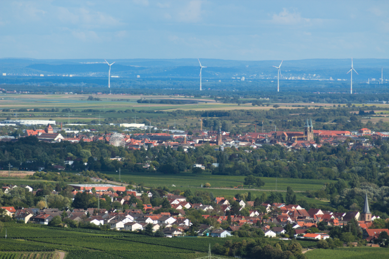
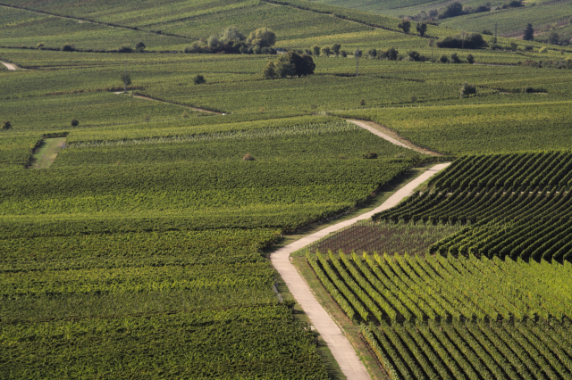
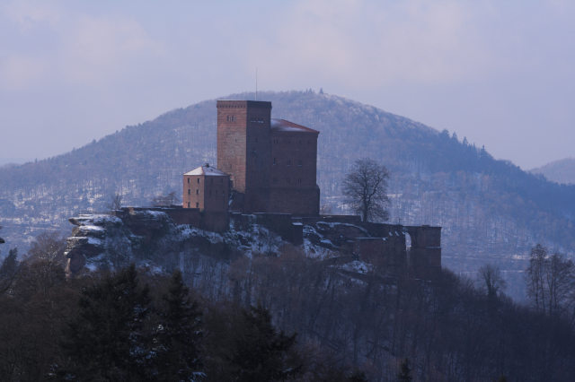
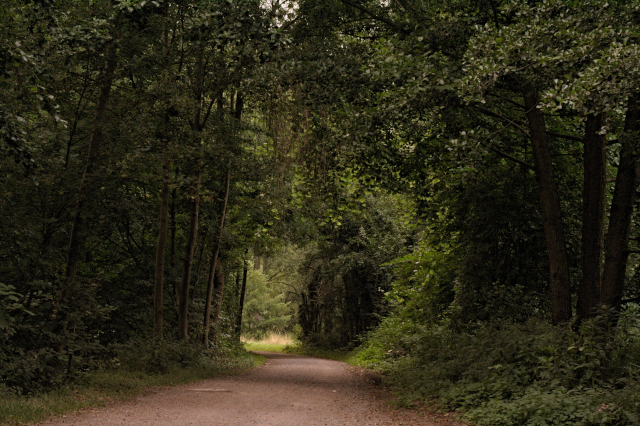
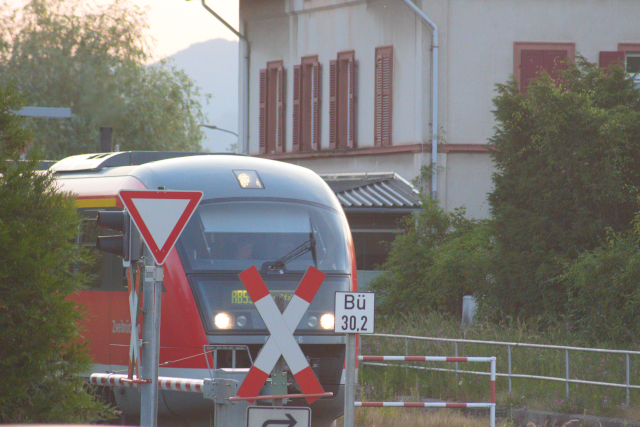
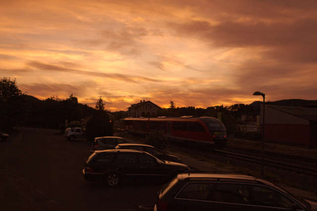
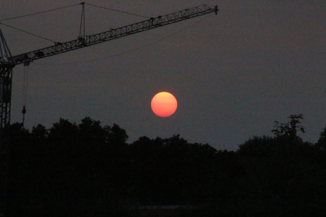

In order to say it exactly, I am living 49°12'24.0"N 8°04'40.8"E. That is the coordinate that Google maps told me when I had lost and found again my smartphone. You can look it up on the map. That is in the south west of Germany, about 25 kilometers (about 15 miles) from the french border.
I am living in the village Godramstein. Godramstein belongs since 1972 to the city of Landau and is a part of it.

On the picture you see in the foreground the village Godramstein, then in the middle you see the city of Landau, and then the valley of the river Rhine. In the background you see the Black Forest.
Here, where I am living, I am surrounded by wine yards. The wine is the most important agrarian product here.

Nearby is the Palatinate Forest which is a designated nature park.
Famous is the Trifels Castle, where Richard the Lionheart, King of England, was imprisoned after the Third Crusade in the year 1193.

What I like most are the very good nearby possibilities to go for a walk in the nature.

Nearby is situated the train station of Godramstein. Here goes the train between the cities of Pirmasens and Landau.

From my appartment I can see the train station, the trains, and I have a wide view over the Palatinate Forest. Here one can see a train going during sunset.

And I love the beautiful sunsets that I can see every day.
